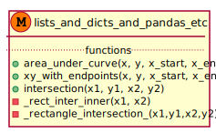

Math¶
numerical¶

-
streng.common.math.numerical.intersection(x1, y1, x2, y2)[source]¶ Copied from https://github.com/sukhbinder/intersection
INTERSECTIONS Intersections of curves. Computes the (x,y) locations where two curves intersect. The curves can be broken with NaNs or have vertical segments.